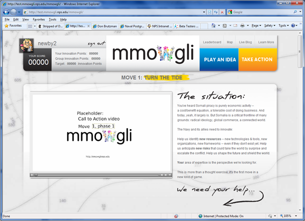
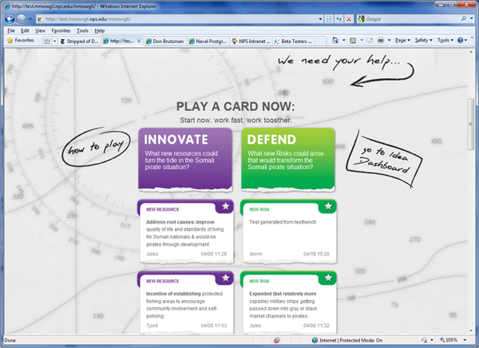
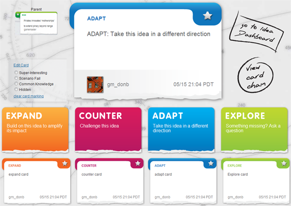
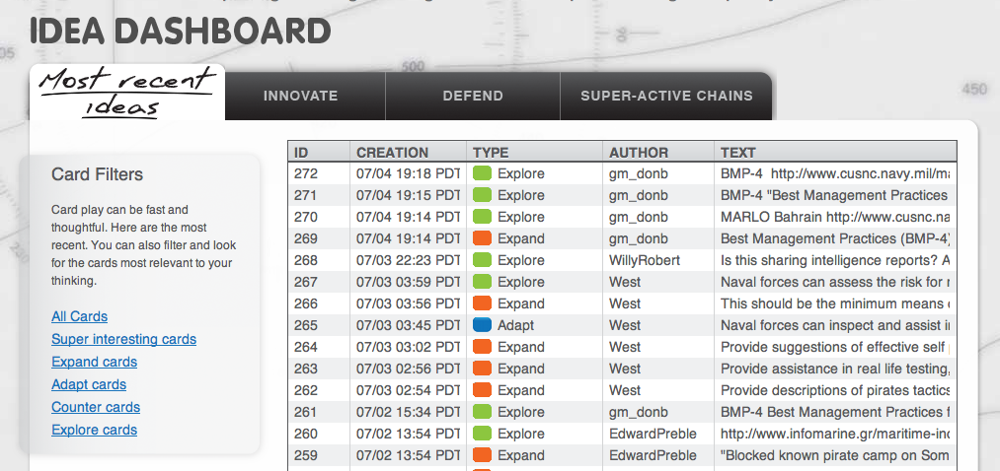
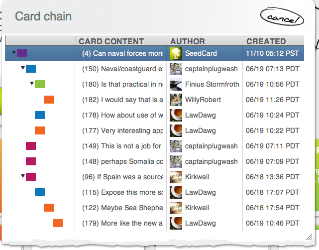

The first stage of the game is playing ideas — coming up with hundreds of micro-strategies that can add up to breakthrough strategies.
Watch the orientation video on the main game screen. It lays out the challenge.

Each card is a "micro-strategy" — 140 characters of your best thinking about how to meet this challenge.

Scan the cards that others are playing and respond with ideas that build on theirs. You can Expand, Counter, Adapt or Explore. Just click the kind of card you want to play.

The goal of card play is to build long conversation chains where lots of micro-strategies add up to new breakthrough strategies. The more people build on each other's ideas, the faster everyone earns points!

If you click on "Idea Dashboard" the system will bring up the following screen. The idea dashboard lets you see all the recent cards that were played. You can choose to filter out ideas based on how they were marked, or their catagory. One use, that we've found from using the system, is that if you see a card show up in status (at the top of the screen), it does not say where in the chain it is. By using the dashboard you can easily find it by looking under the "most recent ideas".
If you click on "View Card Chain" it will bring up the following screen. You are able to see every card from Parent to Child cards, including every author, it's type as identified by color and when it was created.

Reading this panel can sometimes be awkward. If you hover near top of "View card chain" popup panel, a "drag here" tab emerges. You can then move it up and over, and stretch via the opposite corner, to make it more readable. Hovering mouse over each line also shows full text as a tooltip.
Another way to see all of this detail at once: go the the Reports page for your game, and then find the card of interest. All of the card chain information is easily reviewable.